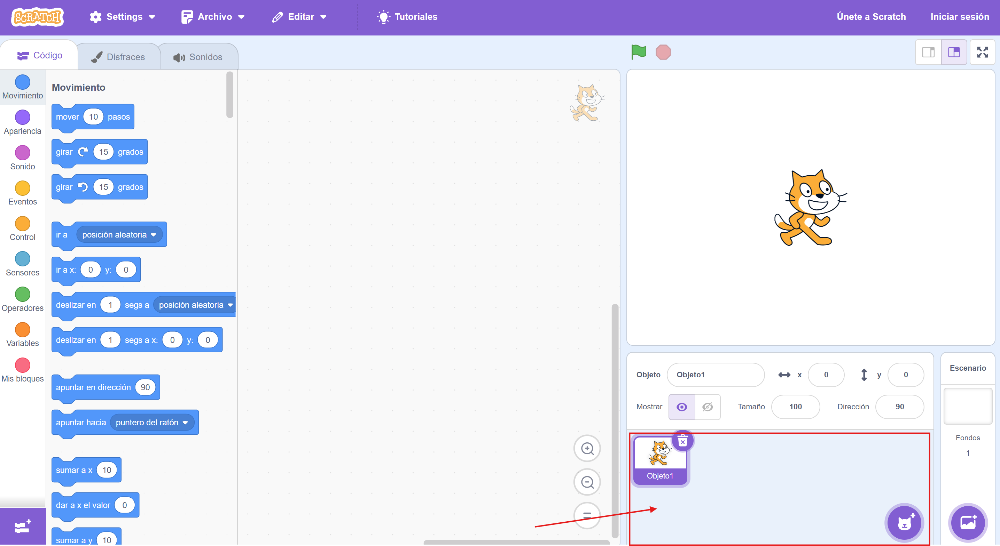
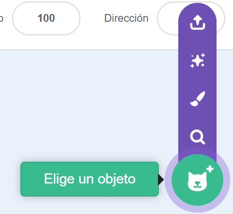

Los proyectos realizados con Scratch están construidos con objetos (en inglés Sprites). Pueden tener forma humana, de animal o de cualquier otro elemento. Un proyecto de Scratch puede tener 1 o varios objetos. Los objetos de nuestro proyecto aparecerán en la parte inferior derecha de la pantalla.

Al igual que con los fondos, podemos añadir objetos de 3 formas:
- A partir de una imagen o imágenes de nuestro ordenador.
- Dibujando el objeto en el editor de Scratch.
- Utilizando la galaría de objetos propia de Scratch.
